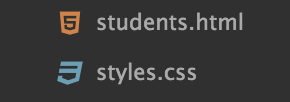
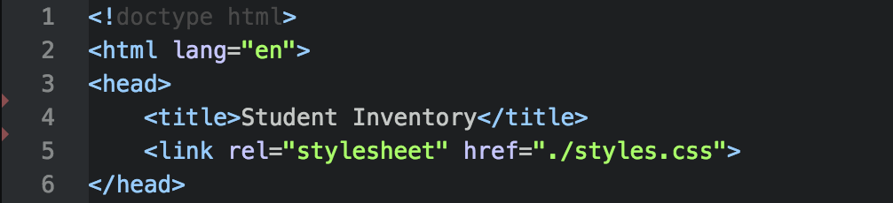
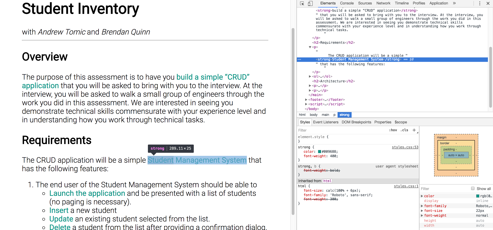

Adding Styles to HTML with CSS
Define
CSS stands for Cascading Style Sheets.
Broken down, it means a files that contain styles or fonts. Those styles are given priority based on top-down positioning (cascading).
These files can be named anything as long as they end with .css much like HTML files all end in .html.
Structure
There are many ways to apply styles via css. The focus of this lesson is to style by tag name via a CSS file loaded into the <head> element. For example, the following CSS will change the text size and background-color of all <p> tags.
p {
font-size: 50px;
background-color: red;
}
u {
color: white;
}
And would yield:
A styled paragraph
Note: The <u> tag surrounding "styled" maintains a browser defined style with the underline.
Loading the Style Sheet
Earlier it was said that the <head> contains information about the page. This information typically includes what styles to apply.

Given the file structure above, the styles.css file would be loaded like so:

Inspection
Like before, the Dev Tools can be helpful in understanding what styles are being applied and to which elements.

Collaboration
Add styles to the Home page and Directions page created earlier.